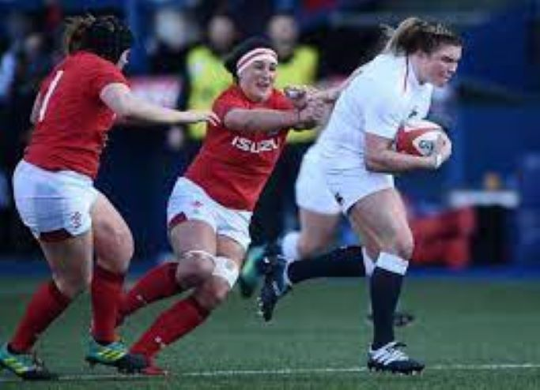

Prop
Props are the powerhouse of the scrum. Lining up in the front row she relishes head to head battles is strong and can push hard when needed.
Hooker
Lining up in the scrum between the two props, the hooker is one of the forwards key decision-makers.She will coordinate the timing at the scrum, and will hook the ball back through the props legs.
Lock
The second row forwards (also known as locks) are the engine room of the scrum and the target women in the lineout, meaning that they need to be tall, powerful players with excellent scrummaging technique and pinpoint timing.
Flanker
Flankers are often considered to be the players with the fewest set responsibilities, but as such must be excellent all-rounders with inexhaustible energy. Speed, strength, fitness, tackling and handling skills are all vital.

Number Eight
Support play, tackling and ball-carrying are the No.8s areas of expertise, making her duties similar to the two flankers. Together the trio forms a unit called the back row.

Scrum Half
Acting as the link between the forwards and the backs, the scrum-half is the key rugby positions when it comes to building attacks. Playing just behind the forwards, a good scrum-half will control exactly when the ball is fed out to the backs from the rear of a scrum, ruck or maul.

Fly Half
The heartbeat of the side and arguably the most influential player on the pitch. Almost every attack will go through the fly-half, who also has the responsibility of deciding when to pass the ball out to the centres and when to kick for position
Wing
Playing out wide on the side of the pitch, the winger is a teams finisher in the attack. A winger is also often the last line of defence when they do not have the ball and as such, pace is their major resource.
Centres
The centres take on their opposite number in an attempt to either break the defensive line, or draw in enough opposition defenders to create space and try-scoring opportunities for their team-mates.
Fullback
Lining up behind the entire back line, the fullback is the closest thing that rugby has to a sweeper in defence.